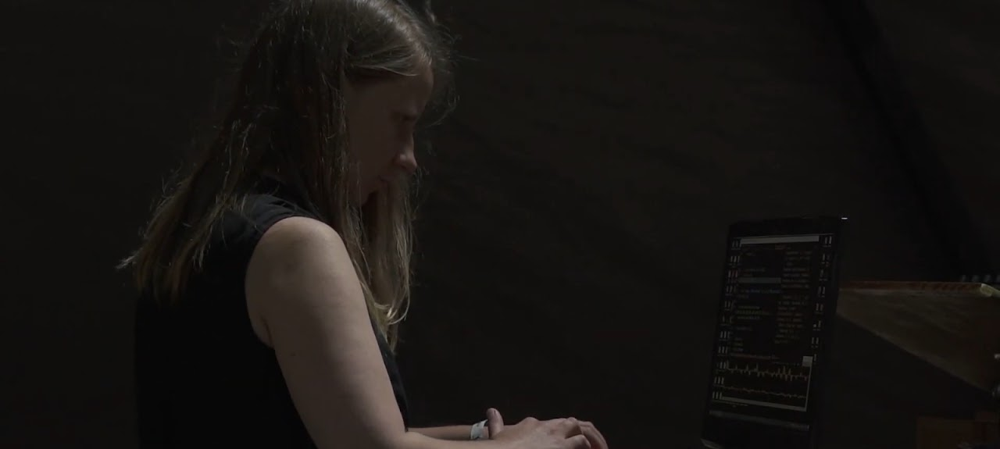

Max/MSP
Blue Moon Station
Code for the musical piece Blue Moon Station.
View on GitHub ↗Composer · Electronic music performer
Max/MSP
Code for the musical piece Blue Moon Station.
View on GitHub ↗Max/MSP
Code for the musical piece Five Subjects.
View on GitHub ↗Installation
Max/MSP setup for an installation using multiple distance sensors.
View on GitHub ↗
Alise Rancāne (b. 1995) is a Latvian contemporary composer and electronic music performer whose work explores relationships between gesture, technology, sound, and improvisation.
She has participated in a wide range of acoustic and electroacoustic music projects, writing for chamber ensembles, creating electronic music works, and collaborating with visual artists, theatre makers, and interdisciplinary performers.
Rancāne holds master’s degrees in Composition from the Jāzeps Vītols Latvian Academy of Music and in Creative Music Technology from the Norwegian University of Science and Technology (NTNU).
Alongside her compositional practice, Rancāne is an electronic music performer. Her recent work involves developing custom sensor-based instruments that combine physical gestures, machine learning, and real-time sound synthesis.
Through improvisation and performance, she investigates new forms of interaction between performer and technology, exploring how machine learning can function not only as a tool for control but also as a creative collaborator.
Her artistic interests include live coding, interactive systems, improvisation, spatial sound, and experimental approaches to electronic music performance.